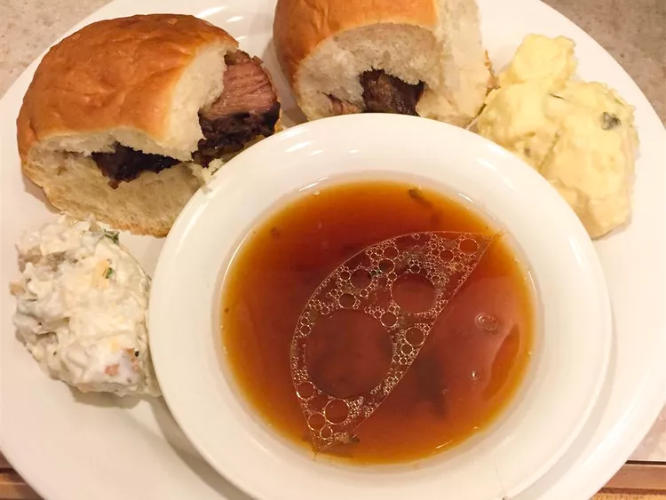

Slow Cooker 3-Ingredient French Dips

Description
This is a super simple slow cooker recipe that
needs just 3 ingredients for French
dip sandwiches. It's always a hit with my
family! I love it served on French rolls;
they soak up the au jus and taste great.
- 1 (3 pound) beef brisket
- 1 envelope onion soup mix
- 1 (14 ounce) can beef broth
- 8 large French rolls, split
Steps
- Place beef brisket in a slow cooker. Mix onion soup mix into
beef broth in a small bowl; pour over brisket.
- Cook on Low 7 to 9 hours.
- Transfer brisket to a cutting board and cut into slices.
Fill rolls with beef. Ladle juices from the slow cooker
into 5 individual bowls to serve with sandwiches for dipping.